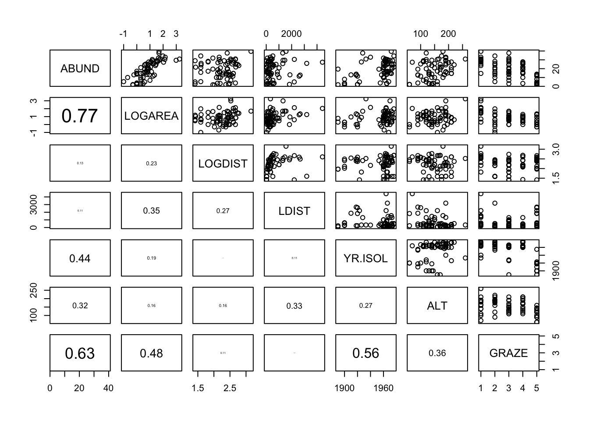

Exercise Solutions
Exercise: Graphical data exploration using R
1. Start RStudio on your computer. If you haven’t already done so, create a new RStudio Project (select File –> New Project on the main menu). Create the Project in a new directory by selecting ‘New Directory’ and then select ‘New Project’. Give the Project a suitable name (quadstats maybe) in the ‘Directory name:’ box and choose where you would like to create this Project directory by clicking on the ‘Browse’ button. Finally create the project by clicking on the ‘Create Project’ button. This will be your main RStudio Project file and directory which you will use throughout this course. See Section 1.6 of the Introduction to R book for more information about RStudio Projects and here for a short video.
Now create a new R script inside this Project by selecting File –> New File –> R Script from the main menu (or use the shortcut button). Before you start writing any code save this script by selecting File –> Save from the main menu. Call this script ‘graphical_data_exploration’ or something similar. Click on the ‘Files’ tab in the bottom right RStudio pane to see whether your file has been saved in the correct location. Ok, at the top of almost every R script (there are very few exceptions to this!) you should include some metadata to help your collaborators (and the future you) know who wrote the script, when it was written and what the script does (amongst other things). Include this information at the top of your R script making sure that you place a # at the beginning of every line to let R know this is a comment. See Section 1.10 for a little more detail.
2. If you haven’t already, download the data file ‘loyn.xlsx’ from the Data link and save it to the data directory. Open this file in Microsoft Excel (or even better use an open source equivalent - LibreOffice is a good free alternative) and save it as a tab delimited file type. Name the file ‘loyn.txt’ and also save it to the data directory.
3. These data are from a study originally conducted by Loyn (1987)1 and subsequently re-analysed by Quinn and Keough (2002)2 and Zuur et al (2009)3. The aim of the study was to relate bird density in 56 forest patches to a number of different environmental variables and management practices. A summary of the variables is: ABUND: Density of birds, Continuous response; AREA: Size of forest patch, Continuous explanatory; DIST: Distance to nearest patch, Continuous explanatory; LDIST: Distance to nearest larger patch, Continuous explanatory; ALTITUDE: Mean altitude of patch, Continuous explanatory; YEAR.ISOL: Year of isolation of clearance, Continuous explanatory; GRAZE: Index of livestock grazing intensity, 5 level Categorical explanatory 1= low graze, 5 = high graze
4. Import your ‘loyn.txt’ file into R using the read.table() function and assign it to a variable called loyn. Use the str() function to display the structure of the dataset and the summary() function to summarise the dataset. How many observations are in this dataset? How many variables? How is the variable GRAZE coded? (as a number or a string?). If you think this will cause a problem (hint: it will!), create a new variable called FGRAZE in the dataframe with GRAZE recoded as a factor.
loyn <- read.table("./data/loyn.txt", header = TRUE,
stringsAsFactors = TRUE)
str(loyn)
## 'data.frame': 56 obs. of 8 variables:
## $ Site : int 1 2 3 4 5 6 7 8 9 10 ...
## $ ABUND : num 5.3 2 1.5 17.1 13.8 14.1 3.8 2.2 3.3 3 ...
## $ AREA : num 0.1 0.5 0.5 1 1 1 1 1 1 1 ...
## $ DIST : int 39 234 104 66 246 234 467 284 156 311 ...
## $ LDIST : int 39 234 311 66 246 285 467 1829 156 571 ...
## $ YR.ISOL: int 1968 1920 1900 1966 1918 1965 1955 1920 1965 1900 ...
## $ GRAZE : int 2 5 5 3 5 3 5 5 4 5 ...
## $ ALT : int 160 60 140 160 140 130 90 60 130 130 ...
# 56 observations and 8 variables (from str())
summary(loyn)
## Site ABUND AREA DIST LDIST YR.ISOL
## Min. : 1.00 Min. : 1.50 Min. : 0.10 Min. : 26.0 Min. : 26.0 Min. :1890
## 1st Qu.:14.75 1st Qu.:12.40 1st Qu.: 2.00 1st Qu.: 93.0 1st Qu.: 158.2 1st Qu.:1928
## Median :28.50 Median :21.05 Median : 7.50 Median : 234.0 Median : 338.5 Median :1962
## Mean :28.50 Mean :19.51 Mean : 69.27 Mean : 240.4 Mean : 733.3 Mean :1950
## 3rd Qu.:42.25 3rd Qu.:28.30 3rd Qu.: 29.75 3rd Qu.: 333.2 3rd Qu.: 913.8 3rd Qu.:1966
## Max. :56.00 Max. :39.60 Max. :1771.00 Max. :1427.0 Max. :4426.0 Max. :1976
## GRAZE ALT
## Min. :1.000 Min. : 60.0
## 1st Qu.:2.000 1st Qu.:120.0
## Median :3.000 Median :140.0
## Mean :2.982 Mean :146.2
## 3rd Qu.:4.000 3rd Qu.:182.5
## Max. :5.000 Max. :260.0
# GRAZE is coded as numeric (i.e. 1,2,3,5)
# create a new factor variable variable FGRAZE which is a factor of GRAZE
loyn$FGRAZE <- factor(loyn$GRAZE)
5. Use the function table() (or xtabs()) to determine how many observations are in each FGRAZE level. See section 3.5 of the Introduction to R book to remind yourself how to do this.
table(loyn$FGRAZE)
##
## 1 2 3 4 5
## 13 8 15 7 13
# or use xtabs function
xtabs(~ FGRAZE, data = loyn)
## FGRAZE
## 1 2 3 4 5
## 13 8 15 7 13
6. Using the tapply() function what is the mean bird abundance (ABUND) for each levels of FGRAZE? Can you determine the variance, the minimum and maximum for each FGRAZE level? Again see section 3.5 of the Introduction to R book to remind yourself how to do this.
# mean abundance of birds for each level of FGRAZE
tapply(loyn$ABUND, loyn$FGRAZE, mean, na.rm = TRUE)
## 1 2 3 4 5
## 28.623077 21.950000 21.286667 20.571429 6.292308
# variance in the abundance of birds for each level of FGRAZE
tapply(loyn$ABUND, loyn$FGRAZE, var, na.rm = TRUE)
## 1 2 3 4 5
## 32.63859 75.80571 90.29552 70.08571 23.10744
# minimum abundance of birds for each level of FGRAZE
tapply(loyn$ABUND, loyn$FGRAZE, min, na.rm = TRUE)
## 1 2 3 4 5
## 14.6 5.3 2.9 3.3 1.5
# maximum abundance of birds for each level of FGRAZE
tapply(loyn$ABUND, loyn$FGRAZE, max, na.rm = TRUE)
## 1 2 3 4 5
## 39.6 34.4 37.7 27.8 13.8
# OR use the summary function
tapply(loyn$ABUND, loyn$FGRAZE, summary, na.rm = TRUE)
## $`1`
## Min. 1st Qu. Median Mean 3rd Qu. Max.
## 14.60 27.30 29.50 28.62 30.90 39.60
##
## $`2`
## Min. 1st Qu. Median Mean 3rd Qu. Max.
## 5.30 18.70 22.80 21.95 26.57 34.40
##
## $`3`
## Min. 1st Qu. Median Mean 3rd Qu. Max.
## 2.90 16.05 20.90 21.29 28.30 37.70
##
## $`4`
## Min. 1st Qu. Median Mean 3rd Qu. Max.
## 3.30 19.35 21.70 20.57 26.25 27.80
##
## $`5`
## Min. 1st Qu. Median Mean 3rd Qu. Max.
## 1.500 2.200 3.800 6.292 11.500 13.800
7. Now onto some plotting action. Use a Cleveland dotchart of each variable separately to assess whether there are any outliers in the response variable (ABUND) or any of the explanatory variables (see table above)? Produce a Cleveland dotchart of each variable separately to assess this (hint: use the dotplot() function). If you feel in the mood, output these plots to an external PDF file.
# first split the plotting device into 2 rows
# and 3 columns
par(mfrow = c(2,3))
# now produce the plots
dotchart(loyn$AREA, main = "Area")
dotchart(loyn$DIST, main = "Distance")
dotchart(loyn$LDIST, main = "Distance to larger patch")
dotchart(loyn$YR.ISOL, main = "Year of isolation")
dotchart(loyn$ALT, main = "Altitude")
dotchart(loyn$GRAZE, main = "Grazing levels")
# A fancier version of a dotplot - just for fun!
Z <- cbind(loyn$ABUND, loyn$AREA, loyn$DIST,
loyn$LDIST,loyn$YR.ISOL,loyn$ALT,
loyn$GRAZE)
colnames(Z) <- c("Abundance", "Area","Distance",
"larger dist","year of isolation",
"Altitude", "Grazing")
library(lattice)
dotplot(as.matrix(Z),
groups=FALSE,
strip = strip.custom(bg = 'white',
par.strip.text = list(cex = 0.8)),
scales = list(x = list(relation = "free"),
y = list(relation = "free"),
draw = FALSE),
col=1, cex =0.5, pch = 16,
xlab = "Value of the variable",
ylab = "Order of the data from text file")
8. If you do spot any unusual observations have a think about what you want to do with them (NOTE: do not just remove them without justification!). If you’re unsure, be sure to speak to an instructor to discuss your options during our synchronous practical sessions. Perhaps you should apply a data transformation to see if this reduces the magnitude of any outlier. The best thing to do here is to play around with different transformations (i.e. log, sqrt) to see which one does what you want it to do. After you have applied these data transformations make sure you re-plot your dotcharts with any transformed variable to double check what the transformation is doing.
# There appears to be two unusually large forest patches compared to the rest
# Also one potentially large distance in DIST
# One option would be to log10 transform AREA, DIST
# log base 10 transform variables
loyn$LOGAREA <- log10(loyn$AREA)
loyn$LOGDIST <- log10(loyn$DIST)
# check the dataframe
str(loyn)
## 'data.frame': 56 obs. of 11 variables:
## $ Site : int 1 2 3 4 5 6 7 8 9 10 ...
## $ ABUND : num 5.3 2 1.5 17.1 13.8 14.1 3.8 2.2 3.3 3 ...
## $ AREA : num 0.1 0.5 0.5 1 1 1 1 1 1 1 ...
## $ DIST : int 39 234 104 66 246 234 467 284 156 311 ...
## $ LDIST : int 39 234 311 66 246 285 467 1829 156 571 ...
## $ YR.ISOL: int 1968 1920 1900 1966 1918 1965 1955 1920 1965 1900 ...
## $ GRAZE : int 2 5 5 3 5 3 5 5 4 5 ...
## $ ALT : int 160 60 140 160 140 130 90 60 130 130 ...
## $ FGRAZE : Factor w/ 5 levels "1","2","3","4",..: 2 5 5 3 5 3 5 5 4 5 ...
## $ LOGAREA: num -1 -0.301 -0.301 0 0 ...
## $ LOGDIST: num 1.59 2.37 2.02 1.82 2.39 ...
9. Is there any potential collinearity between any of the explanatory variables? Plot these variables using the pairs() function. Remember, you only need to check for collinearity between your explanatory variables so you will need to extract these variables from the loyn dataframe either before you use the pairs() function or whilst using it. Optionally, include the correlation coefficient between variables in the upper panel of the pairs plot (see section 4.2.5 of the introduction to R book for details).
# Vanilla pairs plot
pairs(loyn[,c("LOGAREA","LOGDIST","DIST",
"YR.ISOL","ALT","GRAZE")])
# or first create a new dataframe and then use this
# data frame with the pairs function
explan_vars <- loyn[,c("LOGAREA","LOGDIST","DIST",
"YR.ISOL","ALT","GRAZE")]
pairs(explan_vars)
# And with correlations in the upper panel
# first need to define the panel.cor function
panel.cor <- function(x, y, digits = 2, prefix = "", cex.cor, ...){
usr <- par("usr"); on.exit(par(usr))
par(usr = c(0, 1, 0, 1))
r <- abs(cor(x, y))
txt <- format(c(r, 0.123456789), digits = digits)[1]
txt <- paste0(prefix, txt)
if(missing(cex.cor)) cex.cor <- 0.8/strwidth(txt)
text(0.5, 0.5, txt, cex = cex.cor * r)
}
# then use the panel.cor function when we use pairs
pairs(loyn[,c("LOGAREA","LOGDIST","DIST",
"YR.ISOL","ALT","GRAZE")],
upper.panel = panel.cor)
10. Are there any clear relationships between the response variable (ABUND) and individual explanatory variables? Use the appropriate plotting functions (plot(), boxplot()) to visualise these relationships.
pairs(loyn[,c("ABUND","LOGAREA","LOGDIST","DIST",
"YR.ISOL","ALT","GRAZE")],
lower.panel = panel.cor)

11. One of the main aims of this study was to determine whether management practices such as grazing intensity (GRAZE) and size of the forest (AREA) affected the abundance of birds (ABUND). One hypothesis was that the size of the forest impacted birds, but this was dependent of the intensity of the grazing regime (in other words, there is an interaction between AREA and GRAZE). Use an appropriate plotting function to explore these data for such an interaction (perhaps a coplot() or xyplot() might be helpful?).
# Interaction between LOGAREA and FGRAZE?
# Do the slopes look similar or different?
coplot(ABUND ~ LOGAREA | FGRAZE, data = loyn)
# Fancier version of the above plot
# with a line of best fit included just for fun
coplot(ABUND ~ LOGAREA | FGRAZE,
data = loyn,
panel = function(x, y, ...) {
tmp <- lm(y ~ x, na.action = na.omit)
abline(tmp)
points(x, y) })
End of Graphical data exploration using R Exercise